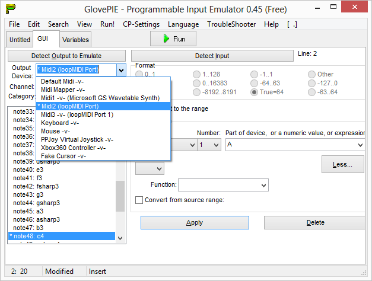
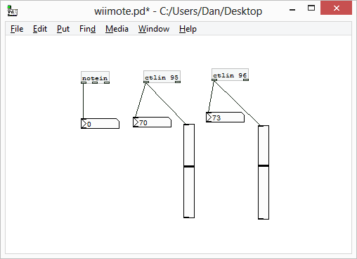

Using the Wii Remote with Pure Data
After some experimentation with my Texas Instruments Chronos watch I’ve been thinking about picking up an accelerometer-based controller (SixAxis or Wiimote). I just picked up a Wii Remote at a local thrift shop, so now I’m looking at how to use it to control some audio hackery. I know using the Wii controllers for this is pretty old hat by now, but this is the first that I’ve had one and looked into it.
Note that I started this project trying to get things working on the Mac and ended up on my Windows 8 PC. I think that the approach I ended up with is still the way to go on the Mac albeit just with a different bit of software. Read on.
Bluetooth pairing
The Wiimote uses Bluetooth, so you should be able to pair it to the Mac or PC like any other Bluetooth peripheral. However, it didn’t show up for me until I pressed the little red sync button that is under the battery door on the back. Apparently you can also hold the 1 and 2 buttons down to accomplish the same thing. It took a little fiddling to get the Wiimote to connect. I ended up not entering any pairing PIN to connect. According to WiiBrew the Wiimote can use a PIN in order to re-establish a lost connection automatically. In my limited testing, I experienced a number of disconnects so if I was using this for a live performance I’d really want to figure out how to make the Bluetooth connection more robust.
Pure Data
The Wiimote shows up in PD using the pd-extended [hid] object. However, the buttons are really strangely numbered and although I got some data when pressing buttons, I’m not too sure how you would go about acutally getting something useful done with it this way. The data stream needs to be “cooked” beyond what is convenient using just [hid] I think, although I’m sure it’s possible somehow.
Thus begins the search for a Wii external.
The first thing I found was wiimote. There is no binary distributed for OSX so I had to try to build my own. I grabbed the source and running make(1) failed thusly:
retnex:wiimote-0.3.2 dan$ make
Package cwiid was not found in the pkg-config search path.
Perhaps you should add the directory containing `cwiid.pc'
to the PKG_CONFIG_PATH environment variable
No package 'cwiid' found
cc -DPD -I../../pd/src -Wall -W -g -DVERSION='"0.3.2"' -arch ppc -arch i386 -arch x86_64 -mmacosx-version-min=10.4 -fPIC -I/sw/include -I/Applications/Pd-extended.app/Contents/Resources/include -ftree-vectorize -ftree-vectorizer-verbose=2 -fast -o "wiimote.o" -c "wiimote.c"
clang: warning: not using the clang compiler for the 'powerpc' architecture
llvm-gcc-4.2: error trying to exec '/usr/bin/../llvm-gcc-4.2/bin/powerpc-apple-darwin11-llvm-gcc-4.2': execvp: No such file or directory
clang: error: gcc frontend command failed with exit code 255 (use -v to see invocation)Ok so there are two issues here. The first is that we need the package cwiid, which is a C library for interfacing with the Wiimote. The second is that we are trying to build a powerpc version of the binary, which is a non-starter for recent versions of the Apple GCC tools I think.
Taking a look at the makefile should help us out of the second issue:
# build universal 32-bit on 10.4 and 32/64 on newer
ifeq ($(shell uname -r | sed 's|\([0-9][0-9]*\)\.[0-9][0-9]*\.[0-9][0-9]*|\1|'), 8)
FAT_FLAGS = -arch ppc -arch i386 -mmacosx-version-min=10.4
else
FAT_FLAGS = -arch ppc -arch i386 -arch x86_64 -mmacosx-version-min=10.4
SOURCES += $(SOURCES_iphoneos)so let’s remove:
-arch ppcresulting in:
FAT_FLAGS = -arch i386 -arch x86_64 -mmacosx-version-min=10.4Ok so now we still have a missing dependency. Hopefully we can grab this on macports or homebrew. Nope, not available in homebrew or macports. Can we build from source? Apparently not unless we get libbluetooth going on Mac.
At this point I think it’s time to explore other options. Which basically means switching to Windows and trying another external called WiiSense.
WiiSense has a binary distribution, so although source is available I didn’t see much point in compiling it from source on Windows. However, when I installed it (copy dll to pd\extra\) and instantiated [WiiSense] paying attention to case (by convention most PD externals are lowercase, but are case senstivive so mixed case can be confusing) I was rewarded with PD crashing hard (complete application termination).
One side note about WiiSense is that it needs to be instantiated with an argument. I don’t know what that argument means since there is no documentation that I could find and I haven’t read the source. I want to get something (anything) working before I go looking through source code to an external.
So it looks like unless we are on Linux (where we should be able to use the [wiimote] external) we are kind of out of luck.
Non-PD solutions
Resigning myself to the fact that some serious hacking may be required to get things working purely in PD, I started looking around at other input interface programs that could output MIDI that I could pipe into PD via Tobias Erichsen’s (fantastic) LoopMidi or IAC as the case may be. On the Mac there is OSCulator and on Windows there is GlovePIE.
I was still on my last Windows excursion so I used GlovePIE for the remainder of my experiments. GlovePIE is compiled against a version of DirectX from 2006 (v9.x) so I had to go download a legacy compatibility version from Microsoft.
GlovePIE is essentially a scripting langauge for IO that happens to support both MIDI output and Wii Remote input. The tool is pretty deep (and weird in my opinion) but there is a lot of information and documentation out there about how it works fortuately.
GlovePIE has a GUI for generating snippets of configuration code:

The GUI dropdown had some value, as it showed how my LoopMIDI ports were enumerated in GlovePIE and responded to my button presses on the Wiimote to let me know it was actually paired correctly. However, I was not able to get it to generate completely correct code for what I wanted it to do. Fortunately between the generated code, the documentation and some blog posts I was able to understand enough of the language to get things working.
Specifically for setting up MIDI I found this post to be useful.
For info on the different glovepie gyro and accelerometer options the GlovePIE documentation is great. There are differences between raw and processed accelerometer data values that are important to know, as well as how to map these values to useful data that we can use in PD. GlovePIE supports unit conversions and some other things that are explained in the documentation.
It’s worth noting that GlovePIE uses the Wii player LEDs (1-4) on the bottom of the Wiimote to indicate status. When a user script is running the first LED should be lit, when the GUI code generation mode is active 1 and 4 will be lit. If the lights are still all blinking, something is probably wrong, or you just need to wait a minute for the pairing to finish.
The GlovePIE code I ended up with looks like the following:
midi2.channel1.c4 = Wiimote.A
midi2.control95 = maprange(wiimote1.smoothpitch, -90 degrees, 90 degrees, 0, 1)
midi2.control96 = maprange(wiimote1.smoothroll, -90 degrees, 90 degrees, 0, 1)And on the other end my PD patch looks like this:

This shows me pitch and roll of the controller (roughly the 2D tilt of the controller when oriented horizontally). There seems to be a roughly half-second delay when measuring the accelerometer. I haven’t tried controlling any audio signals yet, so it may be a little faster than I think it is. I don’t know a lot about Bluetooth latency or accelerometer speed, and from past experience MIDI in PD on Windows can be slow, so I’m not sure what contributes the most to latency in this system.
After all this I never did try OSCulator, although when the need arises and I need to get this working on the Mac it will be the first thing I try.
A few things to note
The Wiimote can’t measure yaw (horizontal rotation) directly becuase the accelerometers measure changes in the force of gravity acting on the sensors. In order to measure yaw you need a sensor bar. It’s not clear to me if GlovePIE handles this or not. The newer generation of Wii remotes and the SixAxis controllers have gyros in them, which can measure rotational changes, and thus yaw.
At first when I ran my PD patch I used CC 10 and some of the the lower MIDI CCs. In GlovePIE these are all 14 bit MIDI messages, so the PD [ctlin] was giving me just the least significant portion of the value, which confusingly looked a lot like noise so I thought either my Wiimote was bad or that this motion sensing stuff just kind of sucked. Luckily I was mistaken. Although it still feels like a lot of work compared to my Chronos, which just used the PD [comport] serial object to communicate.